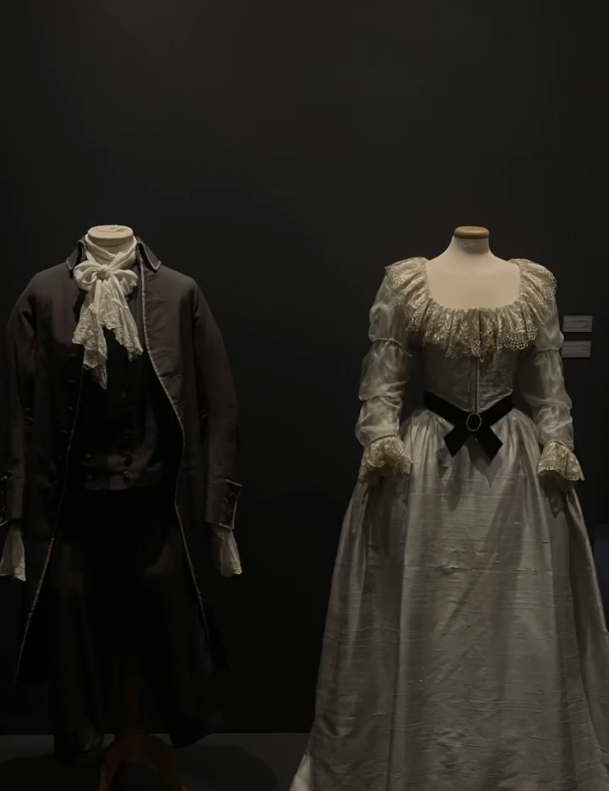

Since my childhood, because of my family, i grow up with old turkish movies and series. I love all the characters! When i first notice this museum,
i screamed! It was all about old turkish movies and series. One room you can act like you are in one of those movies with green screen and next room you can talk with them by phone with their movie lines.
Great experience i can say. The price was 180 TL and student price was 120 TL at the top floor, there was a perfect exhibition when i went there. It’s a very famous exhibition that travels all around the world so don’t forget to make some search before you go there.
Museum time is between 11:00am-19:00pm.